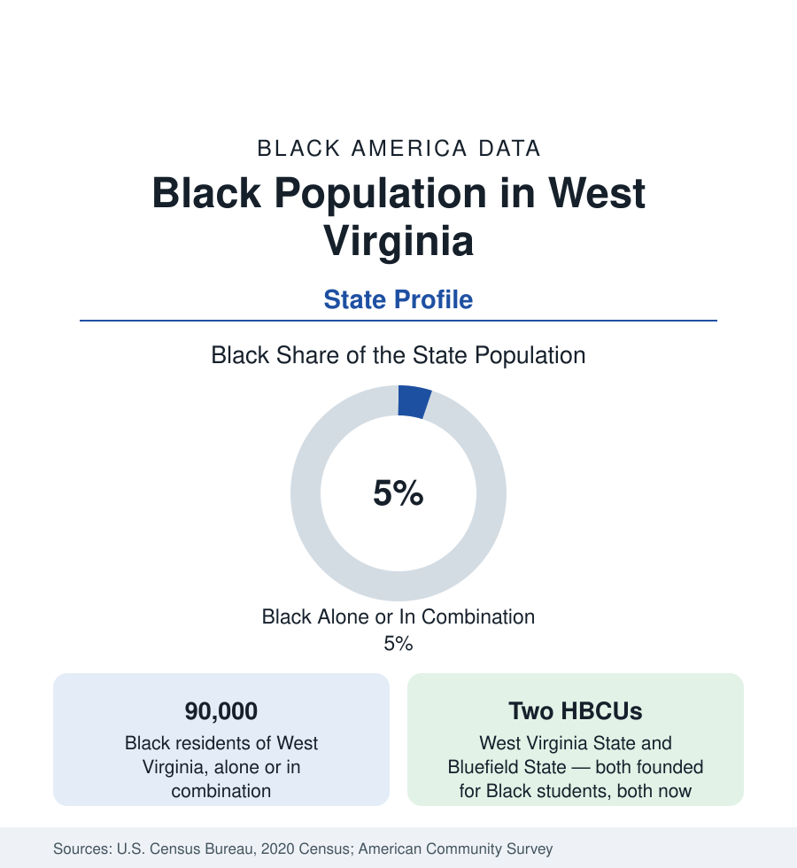

Black Census
Black Population in West Virginia: The Coalfield Communities
About 90,000 Black West Virginians — one in twenty residents — in a small, old population rooted in the coalfields and two HBCUs. The census profile.

West Virginia holds about 90,000 Black residents — Black alone or in combination — roughly one in twenty of its people, with Black alone at about 64,000, or 3.6 percent. It is one of the smallest Black state populations in this reference, and one of the oldest in continuous record: a community built in the salt and railroad towns of the Kanawha Valley and the coal camps of the southern fields, where Black miners were a pillar of the industry's workforce and its union. This article profiles the population in the census data.
The Geography: Kanawha, the Coalfields, the Panhandles
Charleston, the capital, is the largest center: the city is roughly a sixth Black within its 48,000 residents, its community centered on the West Side and the blocks around the old Garnet school district, with the Kanawha Valley's chemical-plant towns (South Charleston, Dunbar — roughly a fifth Black, Institute — the village built around West Virginia State) adjoining. Huntington, the river city, is roughly a tenth Black. The southern coalfields hold the historic layer: McDowell County — once the state's most populous county and a center of Black mining life, with towns like Keystone and Kimball (whose war memorial to Black veterans of the First World War is the nation's first) — recorded Black shares in the range of a fifth to a quarter at the industry's peak and still records the state's highest county shares at a fraction of the population. The Eastern Panhandle (Martinsburg, growing in Washington's exurban reach) is the state's growth pole for every group; the northern panhandle and the Allegheny counties record small communities in the low single digits.
Coal and the Union Chapter
Black West Virginia's formation is a coal story with few parallels: the southern fields recruited Black miners from the Virginia and Carolina countryside from the 1880s onward, and the integrated locals of the United Mine Workers — in an era when the industry's union was among the nation's most integrated — made Black miners a political and institutional force in the coalfield counties out of proportion to their numbers. The data trail of the industry's collapse is therefore also the community's: McDowell County's population has fallen from near 100,000 at mid-century to under 20,000, and its Black population with it, the steepest proportional decline of any community in this reference. The remaining coalfield Black population is old in age structure, rooted in place across generations, and served by institutions — churches, the two HBCUs' alumni networks — of long standing.
The Two HBCUs' Unusual Present
West Virginia holds two historically Black institutions — West Virginia State University (founded 1891, the land-grant, at Institute outside Charleston) and Bluefield State University (founded 1895, in the coalfield south) — and their modern data make them unique in the HBCU tables: both now enroll majority-white student bodies, a transformation that occurred as their regional missions expanded after desegregation while their HBCU designation and heritage continued. Together they enroll in the range of 5,000 to 6,000 students. They are counted in the education section's HBCU data with this note, and their dual character — historically Black institutions serving substantially white regional populations — is a category of its own in the national tables.
Indicators and Change
Black West Virginia's indicators mirror the state's: incomes at the low end of the national distribution for all groups (with the Black-white gap within the state narrower than the national gap, in the compressed distribution of a low-income state), homeownership high in the rooted coalfield and valley communities, health outcomes at the difficult end of the tables in line with the state's overall public health position. The estimates show the state's total population declining slowly and its Black population with it, the Eastern Panhandle excepted in both cases. The age structure is the oldest of any Black state population in this reference — the coalfield generation's grandchildren disproportionately live in the metros of the Carolinas, Ohio, and the capital region, a return-migration map legible in the birthplace data of those states' profiles.
Reading the West Virginia Numbers
West Virginia is this reference's smallest complete profile: 90,000 people, an outsized history in coal and labor, two HBCUs of a unique modern kind, and a decline curve shared with the industry that built it. The profile's weight is in the record, not the count — and the record is preserved in the data with unusual clarity precisely because the population is small enough to trace.
More in Black Census
The Black Population of the United States: Size, Definitions, and Distribution
The Black population of the United States totals 52.8 million — 15.4 percent of the nation. How the Census Bureau defines and counts the population, and where it lives.
Black Median Household Income in the United States
Black median household income stands at $56,490 in the Census Bureau's annual income report — how the figure is measured, how it compares, and what drives it.
The Black Poverty Rate: Levels, Children, and the Long Trend
The official Black poverty rate is 17.1 percent — against 11.1 percent nationally and 7.7 percent for non-Hispanic White Americans. How poverty is measured and what the data show.
Source: U.S. Census Bureau, 2020 Census; American Community Survey; Population Estimates Program.